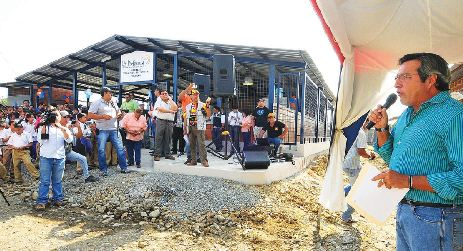

Este parque urbano es un lugar popular entre los residentes locales para caminar, hacer ejercicio y disfrutar de áreas verdes.

Como en muchas ciudades ecuatorianas, la iglesia principal o matriz suele ser un punto de interés histórico y cultural.
Visitar el mercado local puede ofrecer una experiencia auténtica para conocer productos locales, artesanías y la vida cotidiana de la ciudad.
Participar en eventos culturales y festividades locales puede brindar una visión más profunda de la comunidad y sus tradiciones.
Milagro, siendo principalmente una ciudad agrícola y ganadera en Ecuador, no es conocida tradicionalmente por tener una gran cantidad de sitios turísticos como otras ciudades más turísticas del país. Sin embargo, hay algunos lugares de interés y actividades que podrían ser atractivos para los visitantes:
Avance para más